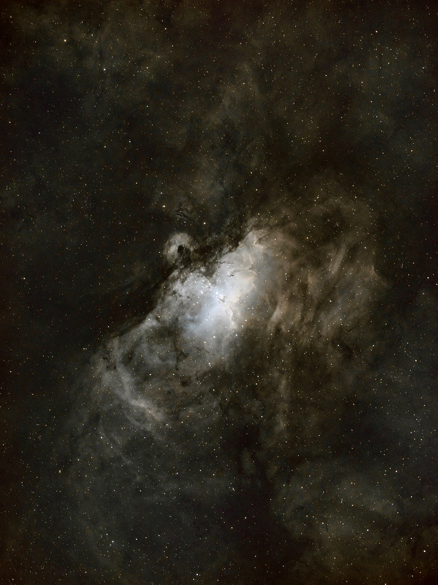
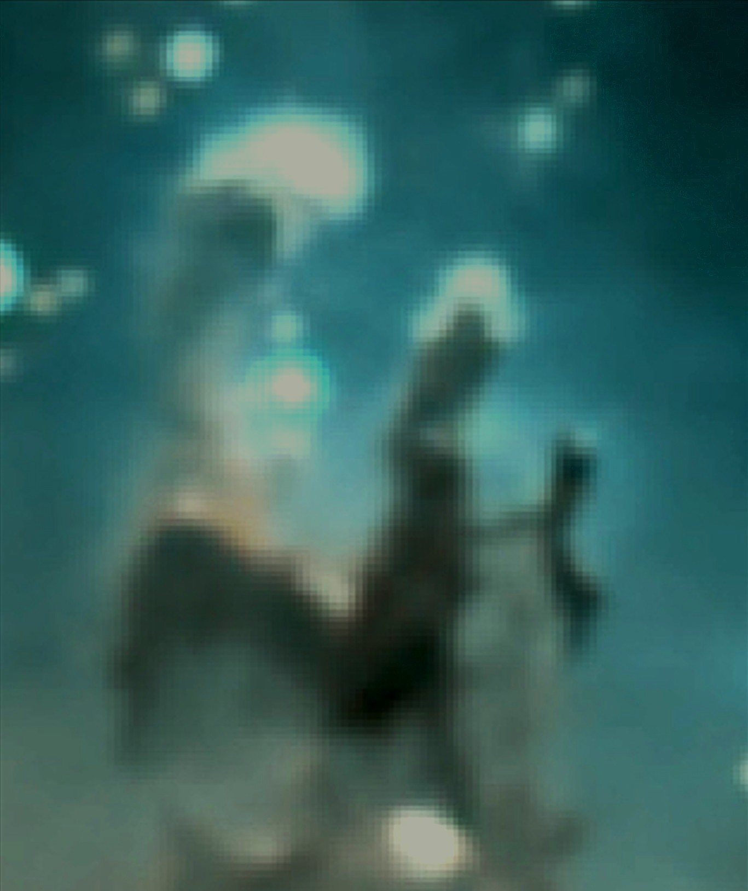
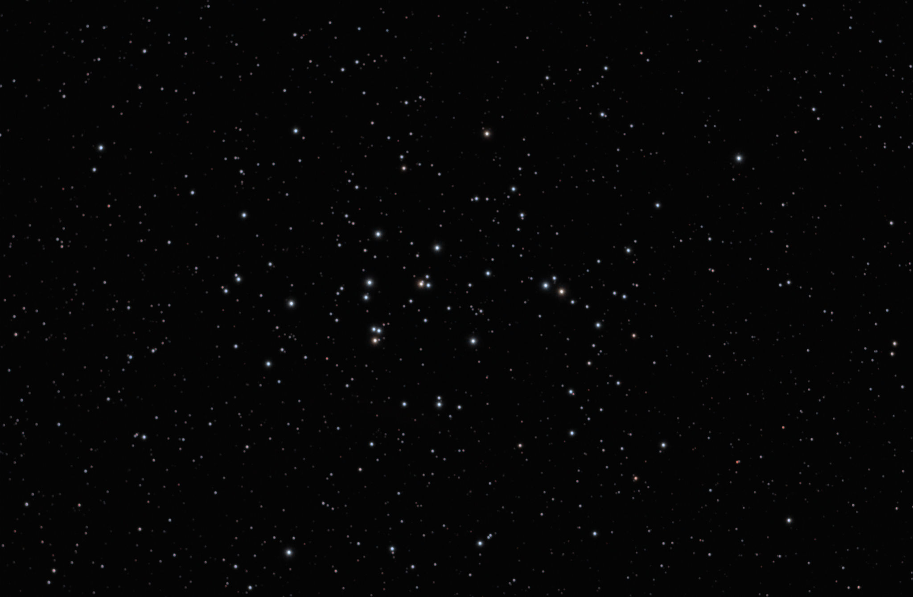

looking up
astrophotography.
Most of these were shot from a Bortle-8 "ish" patio in Austin, TX. Light pollution is rude. Narrowband filters are kind. Patience is everything.

Eagle Nebula — M16105 × 300s · SII + Ha + OIII · 2025-04

Pillars of Creation — detail105 × 300s · cropped from Eagle's nebula

Orion Nebula — M42first target · 2024-11

Crab Nebula — M1303 × 30s · SVBony CLS · 2024-11

Rosette Nebula — NGC 2237518 × 30s · SVBony CLS · 2024-11

Beehive Cluster — M44618 × 15s · SVBony CLS · 2024-11
the rig
// scope
SVBony SV503 80ED (0.8x)
400mm f/5 achromatic refractor
// scope
Orion 6in RC
1370mm f/9 Ritchey–Chrétien
// mount
JUWEI-17
Strain-wave, no counterweight
// mount
Skywatcher EQM-35 PRO
worm-gear, 10lbs counterweight
// camera
ZWO ASI1600MM Pro
cooled mono, 16MP 4/3" sensor
// guide camera
ZWO ASI120MM Mini
AR0130CS sensor, 1/3" 1280x960
// filter
SVBony SV227 2" SHO
Ha, OIII, and SII (~5nm)
// process
Capture in KStars (EKOS) with platesolving every meridian flip. Stack, stretch & mask with Siril, then a small amount of star reduction and curves in Gimp.